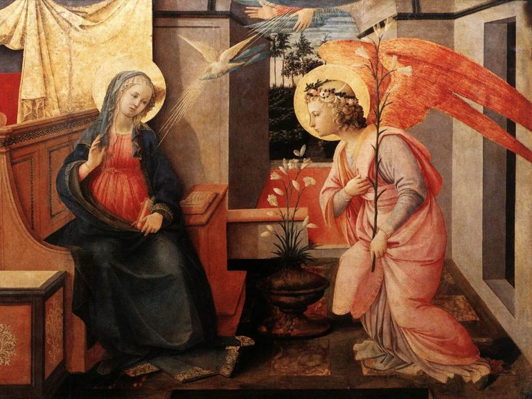
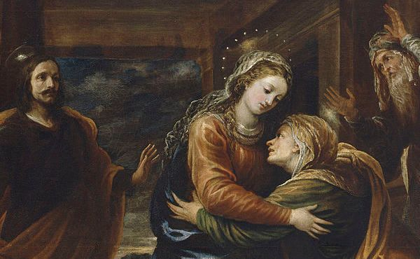
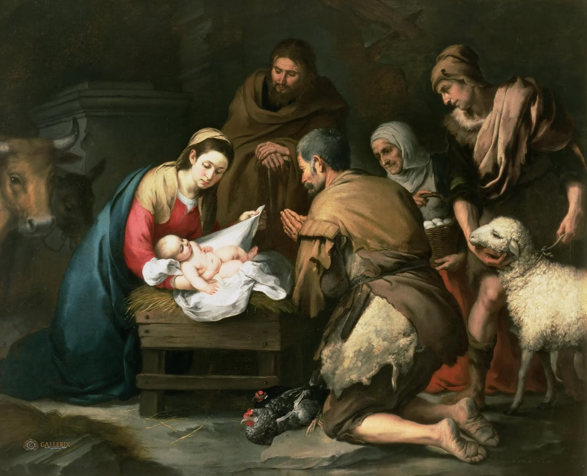
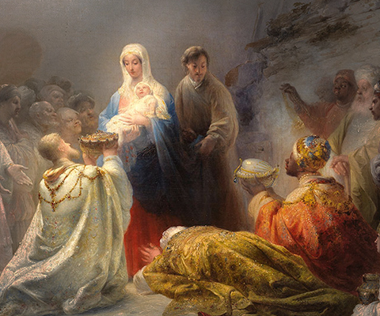
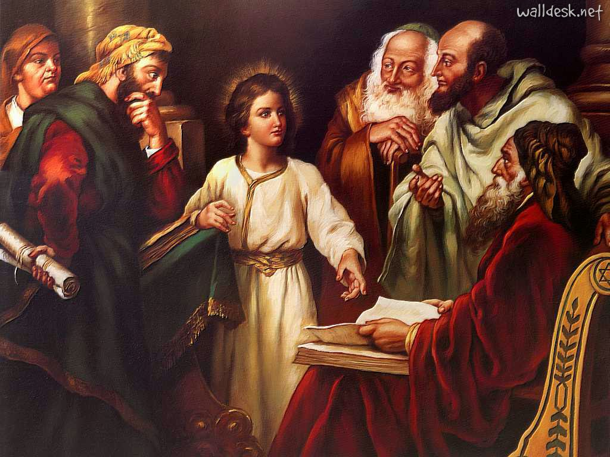
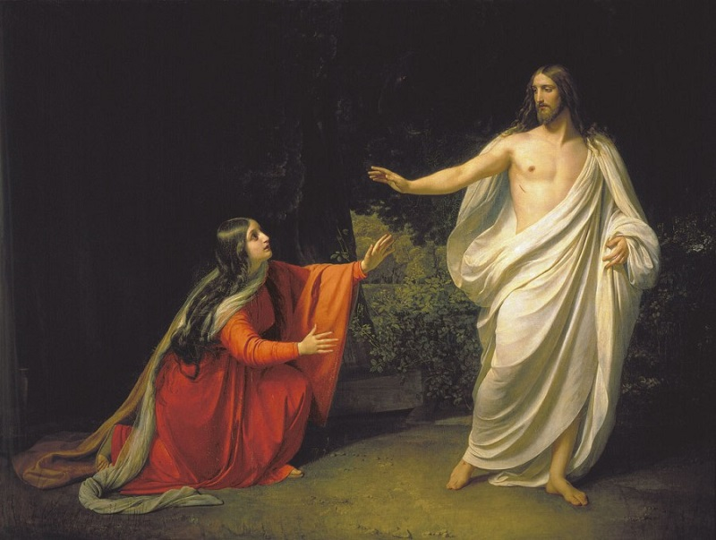
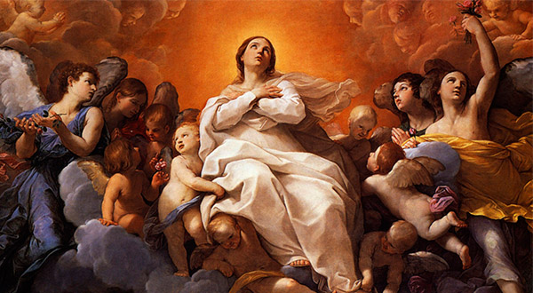

Fundamentação e história
Em 1442, no tempo de São Bernardino de Siena, se difundiu a notícia de uma aparição da Virgem a um noviço franciscano. Este, desde pequeno, tinha o costume de oferecer à bem-aventurada Virgem uma coroa de rosas. Quando ingressou entre os Irmãos Menores, sua maior dor foi a de não poder seguir oferecendo à Santíssima Virgem esta oferenda de flores. Sua angústia chegou a tal ponto que decidiu abandonar a Ordem Seráfica. A Virgem apareceu para consolá-lo e lhe indicou outra oferenda diária que lhe seria mais agradável. Sugeriu-lhe recitar a cada dia sete dezenas de Ave Marias intercaladas com a meditação de sete mistérios gozosos que ela viveu em sua existência. Desta maneira teve origem a coroa franciscana, Rosário das sete alegrias.
Oferecimento
Ó piedosíssima Virgem Maria, purificai nossos lábios e nossos corações, para que possamos, dignamente, recitar a coroa de vossas alegrias. Nós vo-la oferecemos, para gloriar-vos, para implorar vosso auxílio, pelas necessidades da Igreja e de nosso País para satisfazer em tudo, a justiça divina. Nós nos unimos a todas as intenções do Sagrado Coração de Jesus e do vosso Coração Imaculado.
A primeira Alegria de Maria: a Anunciação pelo Anjo Gabriel

Saudamos-te como o Anjo Gabriel, “Ave Maria, cheia de graça o Senhor está contigo…”. E logo te disse: “… Conceberás em teu seio e darás a luz um filho a quem porás o nome Jesus”, seguida da tua aceitação: “Eis aqui a escrava do Senhor, faça-se em mim segundo vossa palavra”. Assim nos mostraste o caminho a seguir: Aceitar a nossa vida como Deus nos apresenta cada dia, vivendo com amor tanto as alegrias como as dificuldades. Como o fez São Francisco quando aceita docilmente sua missão, respondendo com todo seu ser ao chamamento de Jesus.
A Segunda Alegria de Maria: a Visita a sua prima Santa Isabel

Recordamos contigo quando em Judá, foste à casa de Zacarias e saudaste Isabel. Ela, ao ouvir-te, ficou cheia do Espírito Santo, e o menino saltou no seu ventre. Recebemos-te como o fez Santa Isabel: “Bendita sois vós, entre todas as mulheres e bendito é o fruto de vosso ventre Jesus”. Rogamos-te que venhas sempre a visitar-nos, para nos trazeres Jesus e o seu Santo Espírito. Como Francisco quem te nomeou Advogada da família Franciscana e assim realizar vossa missão de tutora, vos pedimos rogai por nós.
A Terceira Alegria de Maria: o Nascimento de Jesus em Belém

Contigo Maria e com São José, alegramo-nos por este presente que nos destes, nesta noite de paz e amor. Com os anjos e pastores digamos: “glória a Deus nas alturas e na terra paz aos homens de boa vontade”. E como Francisco, revivamos a maravilhosa cena do nascimento de Jesus, enchamos nosso coração de alegria e amor, repartindo a todos.
A Quarta Alegria de Maria: a Adoração dos Reis Magos

Vemos com alegria que três sábios acreditam, e com humildade adoram ao Menino Deus, oferecendo-lhe ouro, incenso e mirra, como homenagem e reconhecimento ao Rei, ao Deus e ao homem. Nós, junto aos reis, queremos adorar ao vosso Filho Divino, e render-lhe homenagem com nossas orações, como Francisco, queremos estar alegres, jubilosos e adorar a Deus que se fez carne e habitou entre nós!”
Quinta Alegria de Maria: Maria e José encontram Jesus no templo

Que alegria sentimos contigo ao encontrar a Jesus e poder abraça-lo, como vós o encontraste no Templo! Queremos repetir como São Francisco, que regozijado dizia: “é isto mesmo que eu buscava, é isto o que deseja meu Coração “. Maria, quando nos sentirmos perdidos, longe de Jesus, ajudai-nos a encontra-lo dentro de nós e em toda a criação, como o refletia Francisco no Cântico a Criaturas.
A Sexta Alegria de Maria: Maria vê a Jesus Ressuscitado

Contigo Maria, nos alegramos por Cristo ressuscitado, luz: “que ilumina a todo homem que vem a este mundo”. Ele é o caminho, a verdade e a vida. Como Francisco queremos enchernos de amor por vosso Filho e sempre dizer: “Senhor meu e Deus meu”. “Meu Deus e meu tudo!”
Sétima Alegria de Maria: a Assunção de Maria e sua Coroação

Que alegria sentimos contigo Maria, porque elevada ao céu estás junto a vosso filho amado, sois Co-redentora, intercessora e auxiliadora nossa. Tu, humilde mortal, agora Rainha de céus e terra, mostras-nos, o caminho e vos dizemos: “Oh, Maria, Mãe minha, eu vos dou meu Coração”. Como Francisco, esperamos receber a coroa da Vida.
Oração final
Lembrai-vos, ó puríssima Virgem Maria, que nunca se ouviu dizer que algum daqueles que tenha recorrido à Vossa proteção, implorado a Vossa assistência e reclamado o Vosso socorro, fosse por Vós desamparado. Animado eu, pois, de igual confiança, a Vós, Virgem entre todas singular, como a Mãe recorro, de Vós me valho, e, gemendo sob o peso dos meus pecados, me prostro aos Vossos pés. Não desprezeis as minhas súplicas, ó Mãe do Filho de Deus humanado, mas dignai- Vos de as ouvir propícia e de me alcançar o que Vos rogo. Amém.